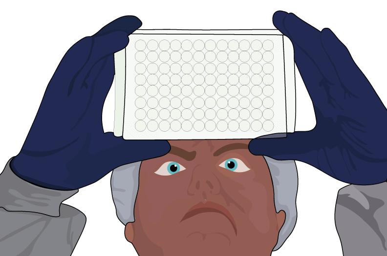
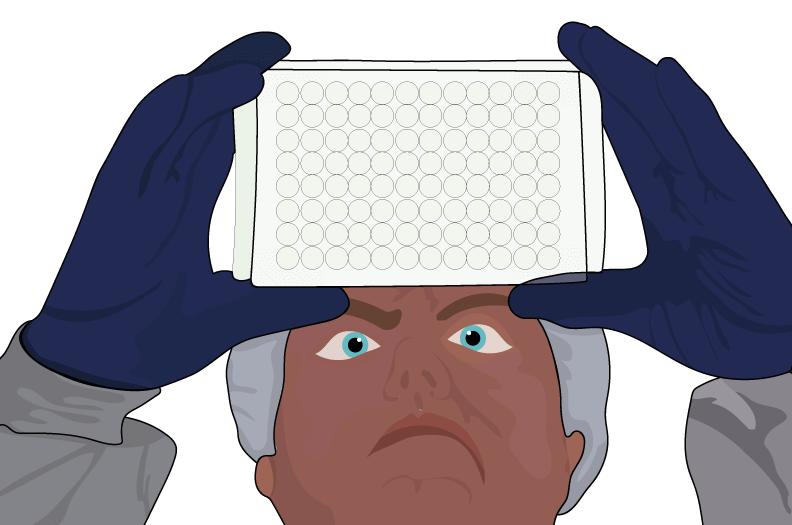
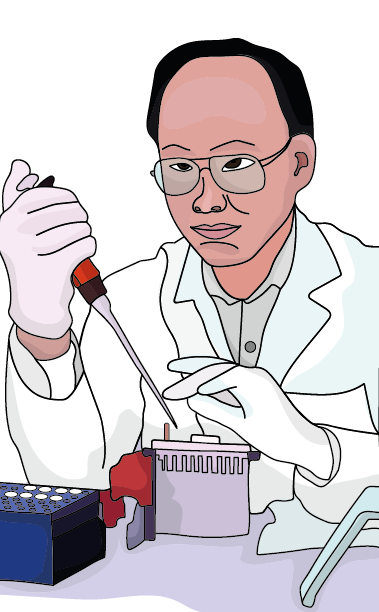
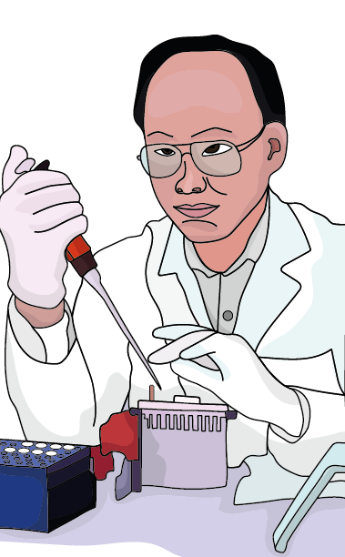

¿Cuáles son los agentes causales de la criptococosis y dónde se encuentran?
La criptococosis es causada por levaduras encapsuladas del complejo de especies Cryptococcus neoformans, (var. grubii y
var. neoformans) y del complejo de especies Cryptococcus gattii. Estas levaduras se encuentran en la naturaleza; para el
complejo de especies C. neoformans, (var. grubii y var. neoformans) especialmente en suelos enriquecidos con excremento
de aves y en árboles y para el complejo de especies C. gattii, en detritos de diferentes especies de árboles.
¿Cuáles son los principales factores de riesgo para desarrollar una criptococosis?
Los principales factores de riesgo que pueden contribuir a desarrollar la criptococosis son:
• VIH.
• Bajo recuento de linfocitos T CD4+.
• Trasplantes de órganos solido.
• Terapia inmunosupresora prolongada.
• Enfermedades autoinmunes.
¿Cómo identificar los agentes causales de la criptococosis?
La identificación se puede hacer a partir de muestras de líquido cefalorraquídeo, esputo, lavado broncoalveolar, orina,
biopsias, sangre, entre otros. Se debe realizar examen microscópico con la técnica de exclusión de la tinta china o
examen histopatológico con coloraciones (azul de Alcián, Mucicarmina de Meyer o plata metenamina) observándose
blastoconidias encapsuladas redondas u ovaladas; identificación fenotípica y aislamiento en medio como agar glucosado de
sabouraud para observar colonias mucoides, opacas, blancas o crema, agar urea (ureasa) y agar canavanina-glicina-azul de
bromotimol (CGB) para la identificación de especie C. gattii.
¿Cómo se trata un paciente con criptococosis?
El tratamiento consta de tres fases una de inducción por dos semanas con anfotericina B liposomal seguido de
fluocitosina más fluconazol, una fase de consolidación por ocho semanas con fluconazol y una fase final de mantenimiento
o profilaxis secundaria con fluconazol. Para pacientes VIH es importante iniciar terapia antirretroviral después del
tratamiento antifúngico.

 


 
